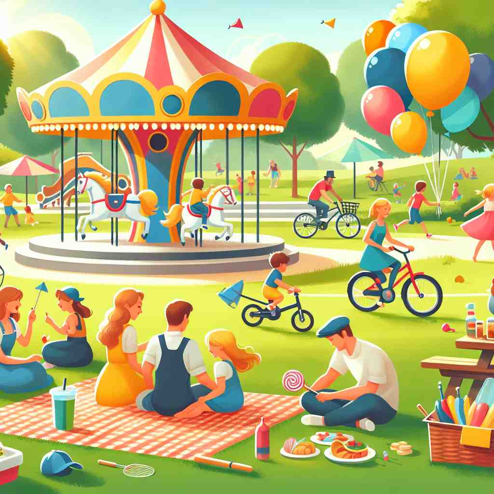

💬 The children feel amusement while playing games at the carnival.

💬 The children are having fun at the amusement park.

💬 Everyone can feel the amusement at the amusement park.

💬 The children feel amusement while riding the carousel.
🔈 [ə'mjuːzm(ə)nt]
🗝️ n. the feeling of being entertained or pleasantly occupied
🖼️ 在一个热闹的游乐园里，小女孩正在摩天轮上，带着灿烂的笑容，看着园区的美景，她脸上洋溢着愉悦和幸福的神情，体现出 'amusement' 作为被娱乐和愉快消遣的感觉。
🔍 想象'amusement'是一种愉悦的情绪，就像被逗乐时的感觉。这种核心含义可以延伸到引起这种感觉的活动，或者是让他人产生这种感觉的行为。有时，这种愉悦感还可能带有一丝轻蔑。通过联想这种愉悦的情绪及其来源，你可以更容易理解和记住'amusement'的各种用法。
💬 The children feel amusement while playing games at the carnival.
💬 The children are having fun at the amusement park.
💬 Everyone can feel the amusement at the amusement park.
💬 The children feel amusement while riding the carousel.
🌳 单词 "amusement" 由词根 "muse"（娱乐、消遣）加上表示行为或状态的后缀 "-ment" 组成。前缀 "a-" 在此用作强调，使其整体意思为 "娱乐、消遣"。
💡 可以将 "amusement" 与 "amuse" 联想在一起，记住它们都与娱乐相关。想象一个音乐会中人们被逗乐的情景，将词根记与愉悦的感觉联系起来。
🗝️ n. an activity that entertains or gives pleasure
🖼️ 在一个社区公园中，孩子们正欢快地在脚下滚动的滑梯上玩耍。旁边还有一个木偶戏剧表演，吸引了众多家长和孩子，这种娱乐活动本身就是 'amusement' 的最佳体现。
💬 The fair offered various amusements for visitors of all ages.
❓ 从感觉延伸到引起这种感觉的活动
🗝️ n. the act of amusing someone
🖼️ 在一个聚会上，滑稽的表演者正在用气球给孩子们制作各式各样的动物，孩子们欢笑声此起彼伏，表演者通过这种方式给大家带来了乐趣和'愉悦感'，这正是 'amusement' 作为一个行为的最佳示范。
💬 His jokes were a source of constant amusement for his friends.
❓ 从被动的感受转变为主动的行为
🗝️ n. a feeling of slight ridicule or contempt
🖼️ 在一个办公室里，员工们正在参加一个冗长、毫无新意的会议。某人讲了一个匪夷所思的建议，其他人交换了一下眼神，嘴角露出微微的嘲弄笑意，这体现出 'amusement' 作为轻微讽刺或不屑的感觉。
💬 She looked at his clumsy attempts with amusement.
❓ 从纯粹的愉悦感演变为带有轻蔑的愉悦